Whiteningホワイトニング白い歯が覗くさわやかな笑顔に
「以前より歯が黄ばんできた気がする……」歯の色は、加齢や日々口にする飲食物の色素によって、年々黄ばみを増していきます。その黄ばみは、もうブラッシングでは落とすことができません。
そこで、渋谷区の「医療法人社団ルーブル歯科・矯正歯科」がおすすめするのがホワイトニングです。ホワイトニングとは、体に安全な薬剤を使って歯を白くする処置のことです。近年では男女を問わず多くの方が受けられています。ホワイトニングで、白い歯が覗くさわやかな笑顔を取り戻しませんか？
ホワイトニングのメリット
| Merit 01 白い歯を手に入れ思い切り笑える |
Merit 02 歯を削る必要がない |
|---|---|
| 歯の黄ばみが気になってうつむきがちになっていた方も、白い歯を手に入れることで自信を持って笑えるようになります。 | かつて歯を白くするには、歯を削らなくてはなりませんでしたが、薬剤を使用するホワイトニングはその必要がありません。 |
| Merit 03 理想の白さに調節できる |
Merit 04 歯へのダメージが少ない |
| ホワイトニングを行う回数や期間を調節することで、理想の白さ・明るさにすることができます。 | 歯を削ったり抜いたりする必要がないうえに、安全性の高い薬剤を使用することで、歯へのダメージは少なくすみます。 |
| Merit 05 体に安全 |
Merit 06 治療費を抑えられる |
| 使用する薬剤の主成分は、米国食品医薬品局（FDA）で安全が保障されている過酸化水素水です。体への負担もありません。 | セラミッククラウンやラミネートベニアを用いた審美治療よりも、費用を抑えて白く美しい口元にすることができます。 |
患者様のライフスタイルに合ったホワイトニングをご提供
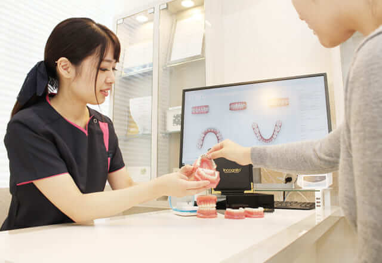
当院では患者様一人ひとりのライフスタイルに合わせ、オフィスホワイトニングとホームホワイトニングのいずれかをご提案しています。それぞれにメリット・デメリットがありますので、両方をふまえてお好きなものを選択しましょう。
すぐに白い歯になりたいなら～オフィスホワイトニング～
歯科医院で行うホワイトニングです。高濃度の薬剤を歯の表面に塗布し、特殊な光を照射して歯の色を白くします。効果が現れるのが早く、通常3回ほどの処置で理想の白さになります。
| Merit | Demerit |
|---|---|
|
|
こんな方におすすめ！
- 結婚式や面接など、大切なイベントを間近に控えている方
- 専門家に処置してほしい方
- 自分で処置するのが面倒な方
- とにかくすぐに白い歯になりたい方
オフィスホワイトニングの流れ
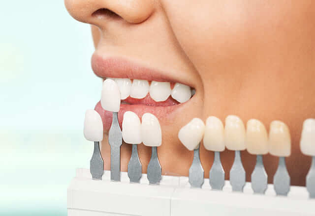
初めに歯のクリーニングを行った後、歯ぐきの保護剤を塗布。そこで高濃度の薬剤を塗布します。その上から特殊な光を照射して薬剤を歯に浸透させ、最後に薬剤を除去して完了です。
※表は左右にスクロールして確認することができます。
| Step 01 準備 |
Step 02 歯ぐきの保護 |
Step 03 薬剤を塗布 |
Step 04 光を照射 |
Step 05 洗い流す |
|---|---|---|---|---|
| 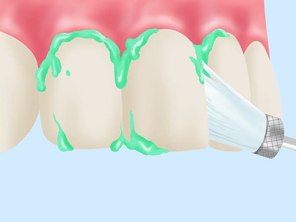 | 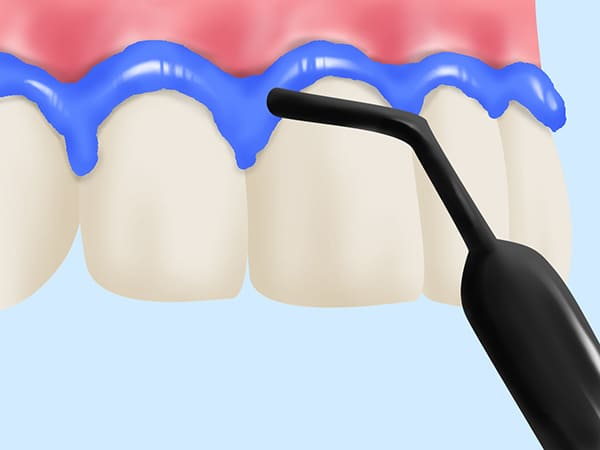 | 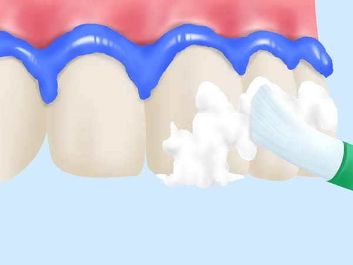 | 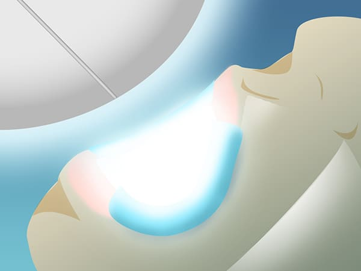 | 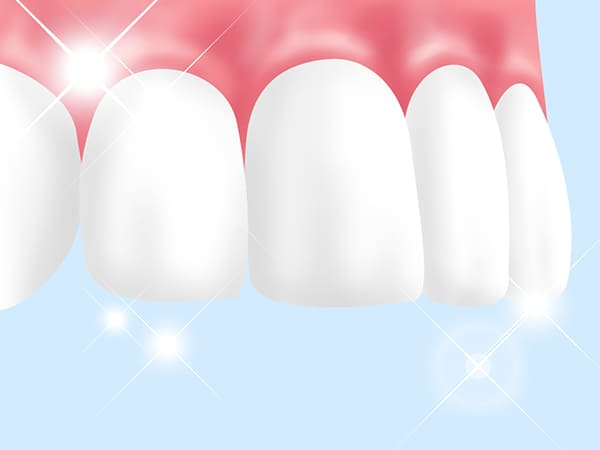 |
| 歯のクリーニングやレントゲン撮影を行います。 | 歯ぐきを保護するために薬剤を塗布します。 | 歯の表面に高濃度のホワイトニング剤を塗布します。 | 光の照射によって薬剤を浸透させます。 | 薬剤を洗い流したら完了です。 |
オフィスホワイトニングの費用
| オフィスホワイトニング | 33,000円（税込） |
ご自宅でじっくり取り組みたいなら～ホームホワイトニング～
ご自宅で行うホワイトニングです。歯科医院で歯型を採って製作したマウストレーに低濃度の薬剤を入れ、毎日一定時間装着することで歯を徐々に白くします。効果が現れるまで日数がかかりますが、一度白くなると長持ちします。
| Merit | Demerit |
|---|---|
|
|
こんな方におすすめ！
- ご自宅でじっくり取り組みたい方
- 通院する時間が取れない方
- 白さを長持ちさせたい方
治療の流れ
歯科医院で歯型を採り、マウストレーを製作します。ご自宅でそのマウストレーに低濃度の薬剤を入れ、毎日一定時間装着。トレーを外してブラッシングします。これを約2週間続けることで理想の白い歯になります。
※表は左右にスクロールして確認することができます。
| Step 01 マウスピース作成 |
Step 02 歯磨き |
Step 03 薬剤の注入 |
Step 04 装着 |
Step 05 外す |
|---|---|---|---|---|
| 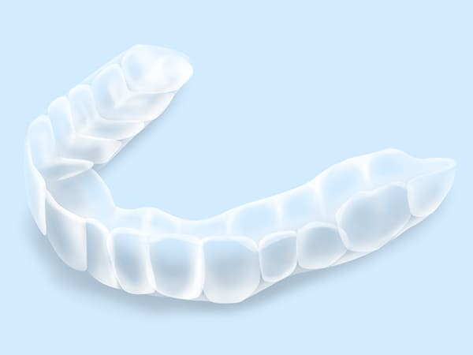 | 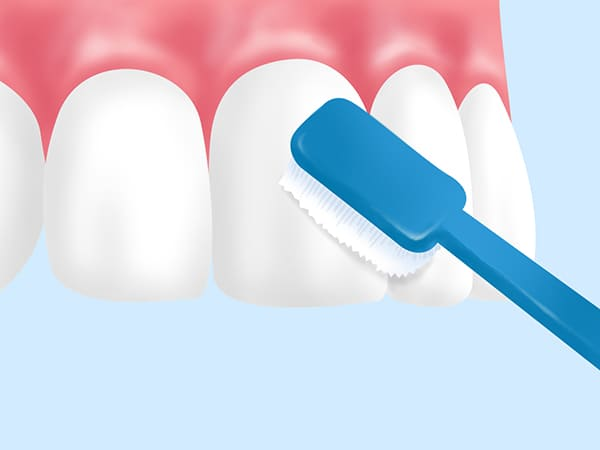 | 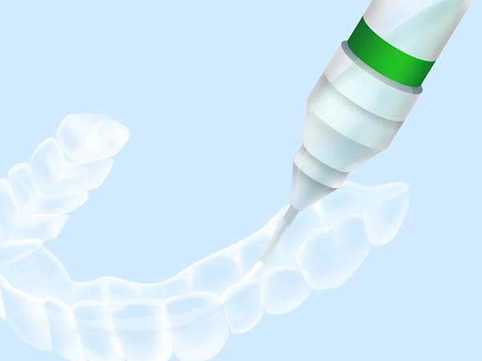 | 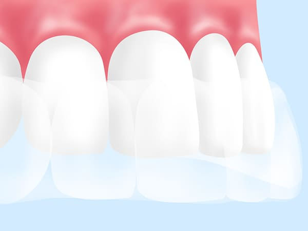 | |
| マウスピースをお口に合わせて作成します。 | 歯磨きでしっかりと汚れを落とします。 | 低濃度のホワイトニング剤をマウスピースに注入します。 | 浸透させるために一定時間の間、装着します。 | マウスピースを取り外して薬剤を洗い流します。 |
ホームホワイトニングの費用
| ホームホワイトニング | 33,000円（税込） |
Esthetics & Care口元エステ・ケア
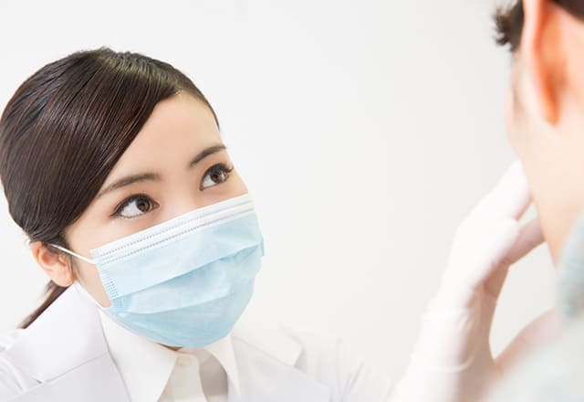
口元で気になるのは、「歯」だけではありません。「歯ぐきが黒ずんでいる」「唇のしわをどうにかしたい」、また「口のまわりにハリが欲しい」など、口元を「きれいしたい」と思われている方は多いのではないでしょうか。
「でも、どうしたらいい？」とお悩みなら、「医療法人社団ルーブル歯科・矯正歯科」までご相談ください。当院では、さまざまな口元エステ・ケアメニューをご用意しています。歯と一緒に、きれいな口元を手に入れませんか？
口元エステ・ケアとは、どんなもの？
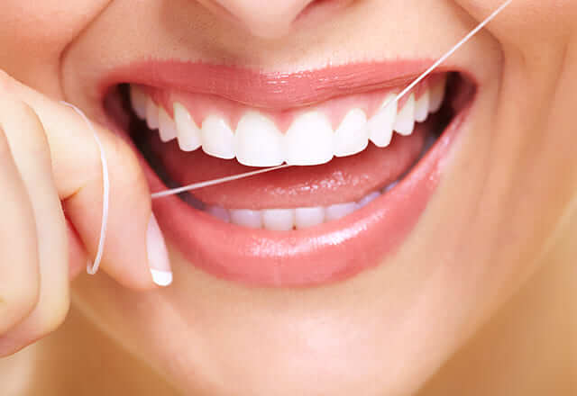
口元エステ・ケアとは、しわやたるみなどが気になるお口まわりのパーツにボツリヌス菌注入などのほかさまざまな施術を行うことで、ハリのある美しい口元にするものです。歯科医院という医療機関で行いますので、安心して施術を受けていただけます。
ボトックス
ボツリヌス菌から抽出されたタンパク質の一種「ボツリヌストキシン」を、緊張して萎縮した筋肉に注射して筋肉を緩める施術です。ほうれい線などの気になるしわの改善だけでなく、歯ぎしりや食いしばり、顎関節症の改善にも効果的です。
ボトックスのデメリットとして、術後に痛み・腫れ・内出血などの症状が現れる可能性がございますのでご留意ください。
| ボトックス | 33,000円（税込） |
自費クリーニング
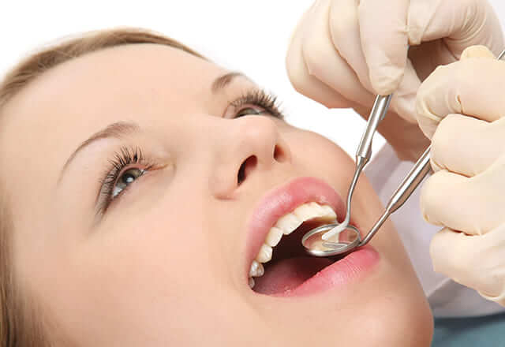
歯のクリーニングには、保険が適用されるものと自費診療になるものがあります。保険のクリーニングは、歯周病治療の一環として行われる歯石除去を指します。それに対し自費のクリーニングは、専門用具を使ってすみずみまでの汚れを落としたうえで、虫歯予防効果があるフッ素塗布などを行うものです。
虫歯・歯周病の原因となるプラーク（歯垢）や歯石がなくなり予防につながるのはもちろん、軽度の着色汚れも取り除かれ、歯の本来の白さが戻ります。さらに口臭予防にもつながりますので、「きれいなお口の維持」のためにおすすめです。
自費クリーニングデメリットとして、歯茎が弱っていると出血の可能性があるのでご留意ください。
| 自費クリーニング | 11,000円（税込） |
デンタルエステ
デンタルエステでは、お口まわりのさまざまなお悩みを解決することができます。当院では次のことなどを行っています。
※表は左右にスクロールして確認することができます。
| ガムピーリング | リップエステ | 口腔マッサージ |
|---|---|---|
| 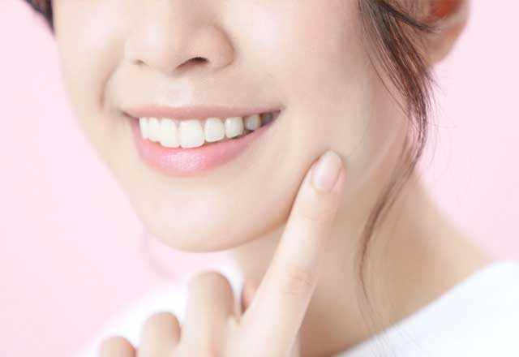 | 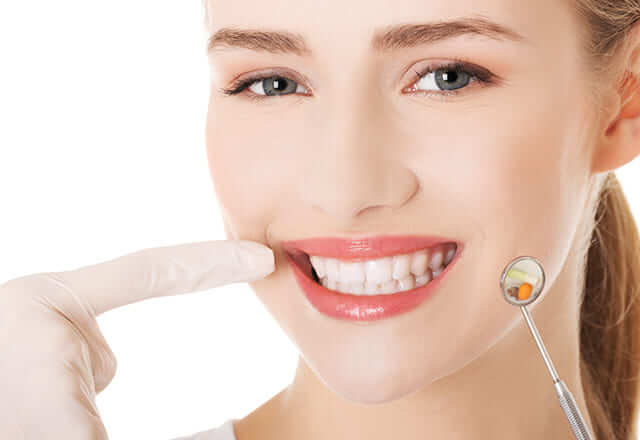 | 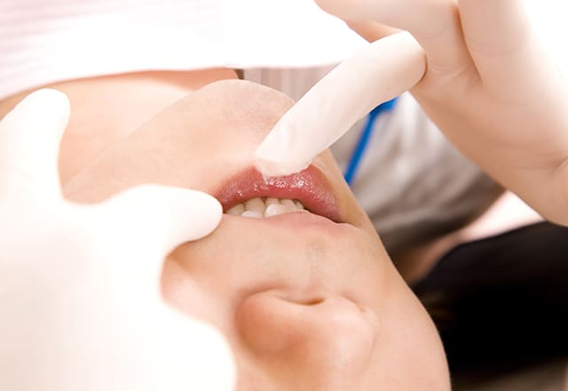 |
| 歯ぐきに沈着した色素を取り除く施術です。薬剤や歯科用レーザーを用いて、歯ぐきの色素が沈着した表面だけをはがして、きれいにします。 | クレンジングで口紅やリップを落とした後、古い角質を除去して新陳代謝を促し、さらにマッサージやパックを行うことで、唇のしわを改善。弾力ある唇を取り戻します。 | お口の内側から、歯ぐきや唾液腺、咀嚼腺などをマッサージします。歯ぎしり・食いしばりなどによるストレスの影響で凝り固まった口元の筋肉をほぐします。 |